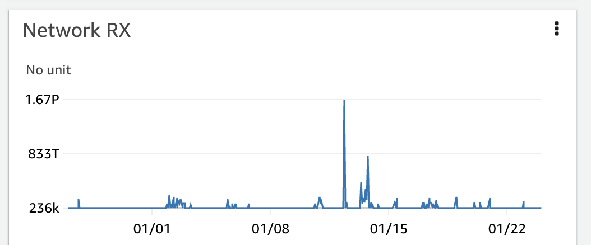
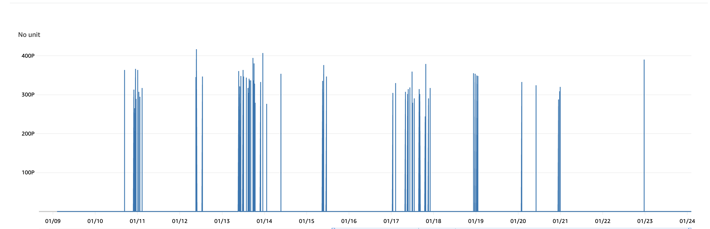

페타바이트 트래픽 원인 분석기
대시보드에 보이는 이상한 단위
회사에서는 운영하는 서비스의 상태를 확인하고 주의 사항을 공유하기 위한 주간 미팅을 진행합니다. 서비스는 EKS를 사용하고 있으며, 상태 확인을 위해 AWS CloudWatch Container Insights를 활용하고 있습니다. 그런데 어느 날 대시보드를 확인하다 이상한 수치들을 발견했습니다.

Y축의 단위를 보니 1.67 페타바이트가 표시되어 있었습니다.

최대 값은 400 페타바이트에 이르렀습니다. 🙀
여러 가지 추측을 해봤지만, 원인을 찾기 위해 CloudWatch가 어떻게 메트릭을 수집하는지 알아보기로 했습니다.
CloudWatch가 메트릭을 수집하는 방법
CloudWatch 메트릭 수집 방법을 알아보기 위해, 오픈소스로 공개된 aws/amazon-cloudwatch-agent 저장소를 참조했습니다.
amazon-cloudwatch-agent는 Kubernetes에서 사용하는 cAdvisor를 활용합니다.
cAdvisor는 컨테이너에서 사용하는 리소스와 퍼포먼스 메트릭을 제공합니다. 이
값들을 활용하여 메트릭 값을 계산합니다.
계산 로직은 아래와 같습니다.
netIfceMetric[NetRxBytes] = float64(cur.RxBytes-pre.RxBytes) / float64(deltaCTimeInNano) * float64(time.Second)
netIfceMetric[NetTxBytes] = float64(cur.TxBytes-pre.TxBytes) / float64(deltaCTimeInNano) * float64(time.Second)
cur.RxBytes의
데이터 타입이 uint64여서 언더플로우가 발생할 가능성이 있었습니다. 과도한
트래픽이 발생하는 경우를 확인하기 위해 로그를 출력하는 부분이 있었고, 실제 값도
확인할 수 있었습니다.
// github.com/
if netIfceMetric[NetRxBytes] > oneTerabytes || netIfceMetric[NetTxBytes] > oneTerabytes {
log.Printf("I! Too Big value for network RX/TX bytes, final Rx:%v, final Tx:%v, curRx:%v, preRx:%v, curTx:%v, preTx:%v, deltaCTimeInNano:%v",
netIfceMetric[NetRxBytes], netIfceMetric[NetTxBytes],
cur.RxBytes, pre.RxBytes,
cur.TxBytes, pre.TxBytes,
deltaCTimeInNano)
}
2022-04-08T08:18:17Z I! Too Big value for network RX/TX bytes, final Rx:3.1837731352719405e+17, final Tx:3.183773135286772e+17, curRx:692608, preRx:317669466, curTx:11946450, preTx:242992298, deltaCTimeInNano:57939882302
Go Playground에서 코드를 실행하면 아래와 같은 결과가 나옵니다.
// https://play.golang.com/p/KppWhxtTtad
package main
import (
"fmt"
"time"
)
func main() {
var curRxBytes uint64 = 692608
var preRxBytes uint64 = 317669466
var deltaCTimeInNano int64 = 57939882302
var rxBytes = float64(curRxBytes-preRxBytes) / float64(deltaCTimeInNano) * float64(time.Second)
fmt.Printf("%v", rxBytes)
// output = 3.1837731352719405e+17
}
3.1837731352719405e+17 와 같은 값을 얻을 수 있고, 이 값을 Python에서 확인하면
원래 CloudWatch Container Insight에서 본 페타바이트 값이 나옵니다.
>>> int(3.1837731352719405e+17)
318377313527194048
>>> int(3.1837731352719405e+17) // (1024 ** 5) # KB MB GB TB PB
282
cAdvisor는 /proc/<pid>/net/dev에서 프로세스의 네트워크 관련 메트릭들을
가져오는데, 프로세스가 실행되면서 값이 누적되고, 재시작하면 다시 0부터
시작합니다. 그래서 Pod를 내리고 다시 올릴 때, 같은 컨테이너 이름의 경우 이전
값보다 현재 값이 더 작아지면서 언더플로우 버그가 발생한 것으로 이해할 수
있었습니다.
이 문제와 관련하여 Helm이나 다른 예제에서 Pod 이름이 항상 다른 것과 관련이 있는지는 아직 확실하지 않습니다. 🤔